作为新希望集团旗下专注于食品和现代农业领域发展的成员企业，新希望六和股份有限公司
是首批中国农业产业化国家级重点龙头企业之一，公司以“打造世界级农牧企业和美好公
司” 为长远愿景。
新希望六和股份有限公司前身是四川新希望农业股份有限公司，创立于1998年，并于1998
年3月11日在深圳证券交易所发行上市，2005年与成立于山东的六和集团强强联合，2011年
资产重组获中国证监会批准，公司更名为新希望六和股份有限公司（股票代码000876）。
公司立足于食品和现代农业领域，注重稳健发展，业务涉及饲料、养殖、肉制品及金融投资
等全产业链，业务遍布全国及越南、菲律宾、孟加拉、印度尼西亚、柬埔寨、斯里兰卡、新
加坡、埃及等近20个国家和地区。
市场地位
- 饲料年产能
2000万吨年产销量国内领先
- 家禽年加工能力
13亿只禽肉年产销量国内领先
- 生猪年加工能力
800万头年产销量国内领先
公司荣誉
-

农业产业化国家重点龙头企业
-

国家认定企业技术中心
-

3个质量检测中心获得国家实验室CNAS认可
-

国家科学技术进步二等奖
-

全球食品安全倡议GFSI中国理事会联席副主席单位
全产业链布局
公司以“为耕者谋利、为食者造福”为企业使命，打造了鸡、鸭、猪三条农牧产业链，
以“基地+终端”模式，通过实施“福达计划”和贯穿全产业链的安全环保（SHE）体系，
打造安全可靠的食品供应生态链，与合作伙伴一起，为消费者提供安全可靠的肉制品。
希望金融、新加坡融资平台
新希望六和产业链首创了农村金融担保模式，农村互联网金融“希望金融”在行业处于领先位置，而且国际融资优势十分强大，使得产业发展与并购游刃有余。
-
原料
新加坡中心
美国蓝星- 原料
-
公司在新加坡建立了海外总部，入股美
国粮食及大宗商品贸易企业蓝星集团，
使企业大宗原料采购在品种、品质、成
本和风险控制等方面具有明显的全球优
势。
-
饲料
优质饲料保障- 饲料
-
新希望六和以饲料起家，是中国规模最
大的饲料企业之一，年销饲料1500万
吨，拥有25万用户，饲料的市场占有率
行业领先，具有强大的技术与经营优
势。
-
养殖
鸡、鸭、猪良种繁育
商品养殖（紧密型农户合作）- 养殖
-
新希望六和建立了鸡、鸭、猪三级良种
繁育体系，并建有商品养殖示范基地，
以“福达计划”等方式与农民紧密合
作。养猪业务，以“公司+家庭农
场”、“技术托管和技术服务”方式，
在优势区域，推动养猪产业的规模化、
标准化、现代化。
-
食品
屠宰、深加工- 食品
-
新希望六和以安全可靠为核心，倾力打
造“新希望六和出品”的背书品牌，面
对消费者的细分市场推出了多个系列品
牌。其中“千喜鹤”冷鲜猪肉为国内高
端领先品牌，“倍有滋”冷鲜禽在全国
率先实现了全程可追溯；“美好”（猪
肉熟食）品牌、六和美食（禽熟食）均
为中国最具影响力品牌。
-
终端
多渠道产品供应- 终端
-
“滋生活”高端肉食连锁店已经营十多
年，近销肉店达上千家，近年以“新希
望六和+”的方式，久久丫、本香猪
肉、嘉和一品等终端品牌陆续加入新希
望体系，使消费者可通过多种渠道享受
到新希望的优质产品。
-
原始数据库、监测网络
- 原始数据库、监测网络
-
新希望六和凭借三十几年的经营和发展，拥有农牧行业最强大的数据库，和世界一流
的检测网络。
-
福达计划、云动保
- 福达计划、云动保
- 福达计划强大的服务系统为养殖户提供营养技术、动保防疫等支持，保障养殖、加工等各环节安全高效、低成本。
-
美食发现中心
- 美食发现中心
- 美食发现中心，以“发现美食，创造美食”为核心，围绕消费者需求，从美食概念创意、研发生产到消费体验、营养方案设计，致力于为消费者带来安全、美味、便捷的健康美食，为餐饮客户提供一站式的研发服务和解决方案。
SHE安全环保体系
SHE（安全环保体系）全程监控全产业链安全是新希望六和产业链的坚强后盾。公司实行董事长直管、专职副总裁督办、检查监督体系直属总部管理的制度，建立以食品全产业链为主线的食品安全控制体系和安全追溯体系，从产业链前端到终端进行安全全程监管。
主要产品及业务种类
- 终端


- 食品


- 食材


- 饲料


舌尖上的美味
- 食材


- 调理品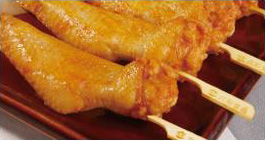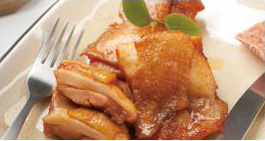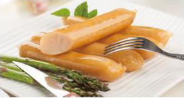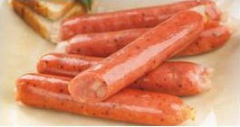
- 预制菜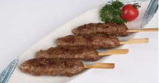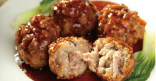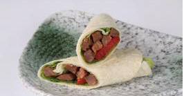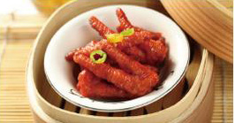
- 食品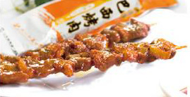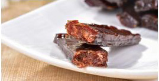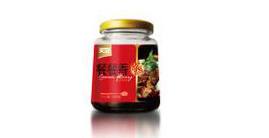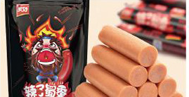